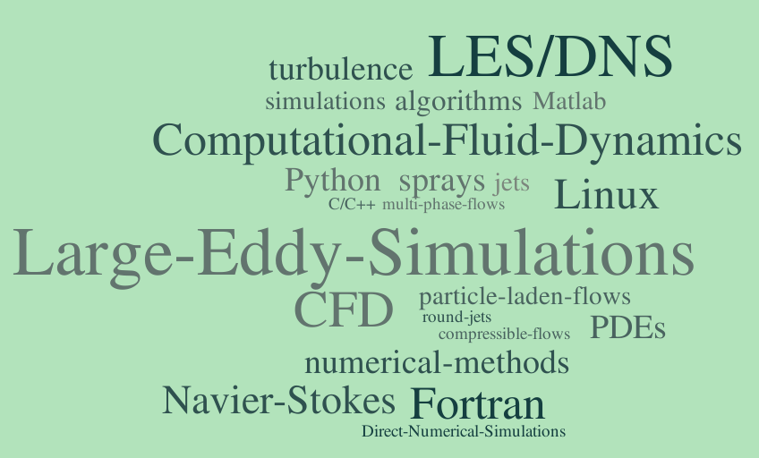

Sri Vallabha Deevi
Post-Doctoral Research Fellow,
Multiphase Flow Laboratory,
Department of Applied Mechanics,
Indian Institute of Technology Madras,
Chennai - 600036.
email: srivallabhad (at) yahoo [dot] com
LinkedIn: https://in.linkedin.com/in/dsrivallabha
|

|